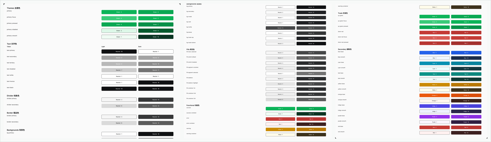
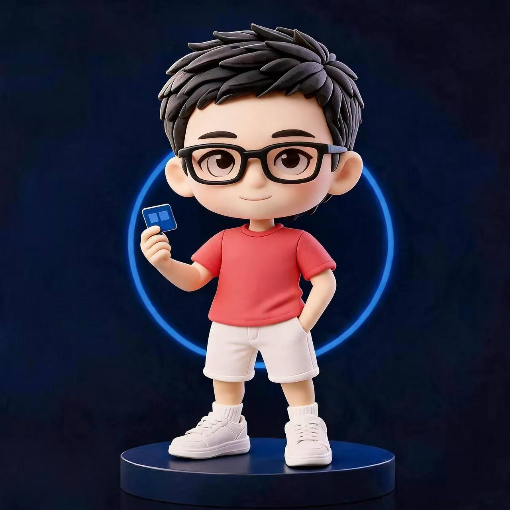

Design system · Research
Color System Methodology
A rigorous approach to building scalable semantic color—from perceptual foundations to product-ready tokens.
Available for UI/UX opportunities
UI/UX Designer shaping thoughtful systems and precise digital experiences—from first insight to final interaction.

Move your cursor
to meet the designer.
Good design should feel inevitable.
Systems, identity, and interaction—shown through the decisions behind them.

Design system · Research
A rigorous approach to building scalable semantic color—from perceptual foundations to product-ready tokens.
Brand experience · Motion
A flexible visual language that turns a static identity into a distinctive, coherent digital experience.
Case study preview
The project connects perceptual color models, accessibility constraints, semantic roles, and component states into one maintainable system.
Case study preview
A motion-led identity exploration built around rhythm, depth, and recognizable blue light—adaptable across campaign and product surfaces.
Profile
I’m Edwiin, a UI/UX designer focused on turning complex requirements into clear systems and polished product experiences.
I work across research, interaction, visual design, and design systems—with careful attention to the details that make a product feel coherent.
Contact meUI/UX Design
Product thinking
Design systems
Research & synthesis
Interaction design
Visual direction
Prototyping
Have a role where thoughtful design matters?
Let’s make it clear.